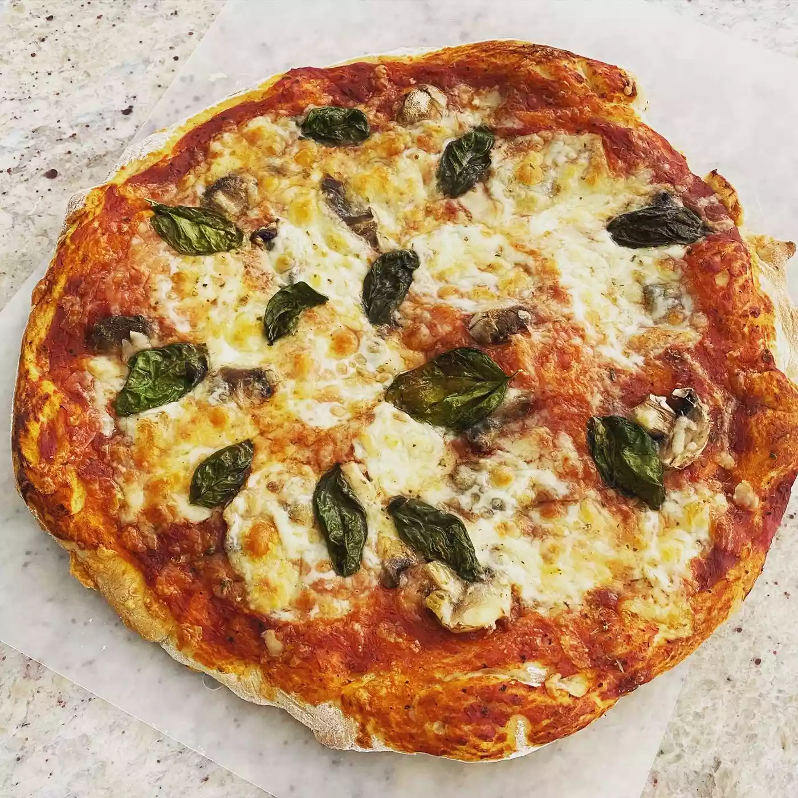

Pizza Crust

Description
This pizza crust recipe was given to me by a friend. It is quick, easy, and delicious!
Ingredients
- Active dry yeast
- Warm water
- Bread flour
- Olive oil
- Sugar
- Salt
Steps
- Dissolve yeast in warm water in a small bowl. Let stand until creamy, about 5 minutes.
- Combine bread flour, olive oil, sugar, salt, and yeast mixture in a mixing bowl; stir well to combine. Beat until a stiff dough has formed. Cover the bowl; let rise at room temperature until dough doubles in volume, about 30 minutes.
- Preheat the oven to 350 degrees F (175 degrees C).
- Turn dough out onto a well-floured surface. Form dough into a round and roll out into a thin crust. Cover with your favorite sauce and toppings.
- Bake pizza in the preheated oven until cheese is bubbly and crust is golden brown, about 20 minutes.
Back to homepage